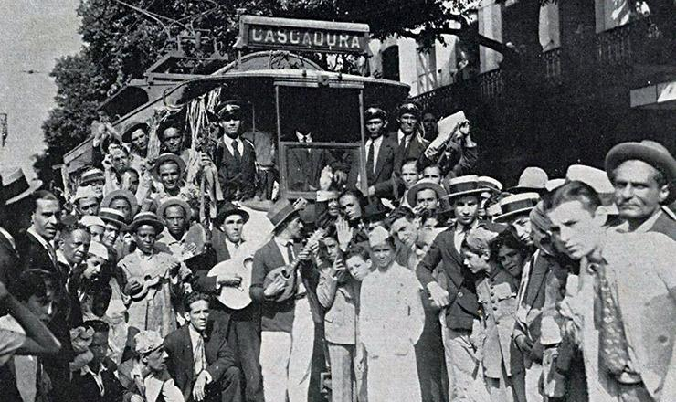
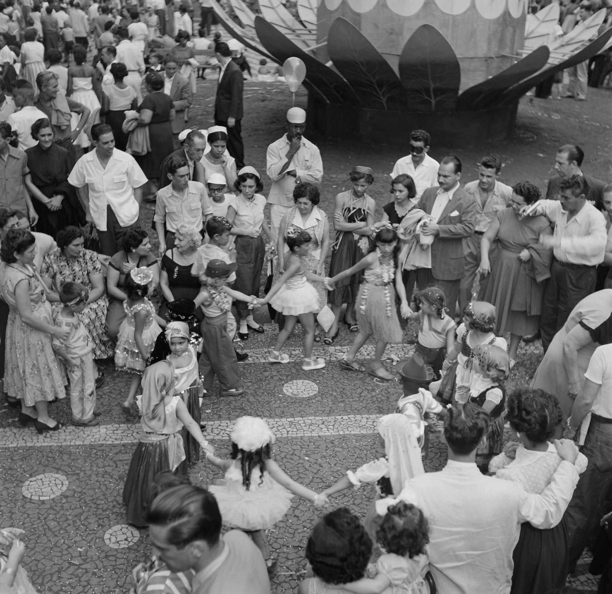
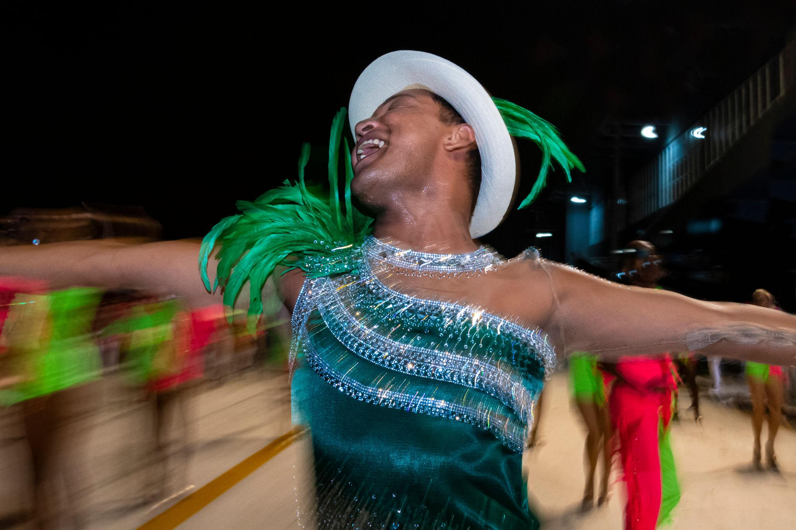
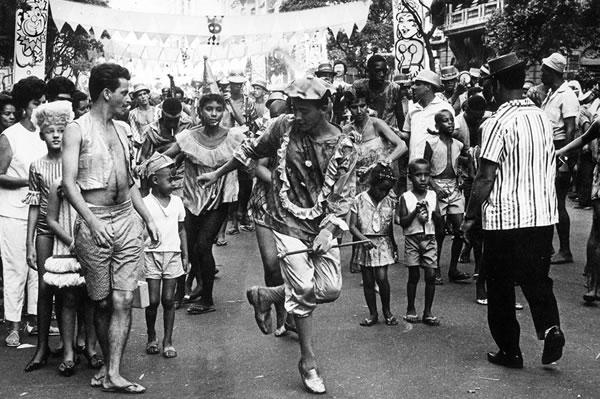
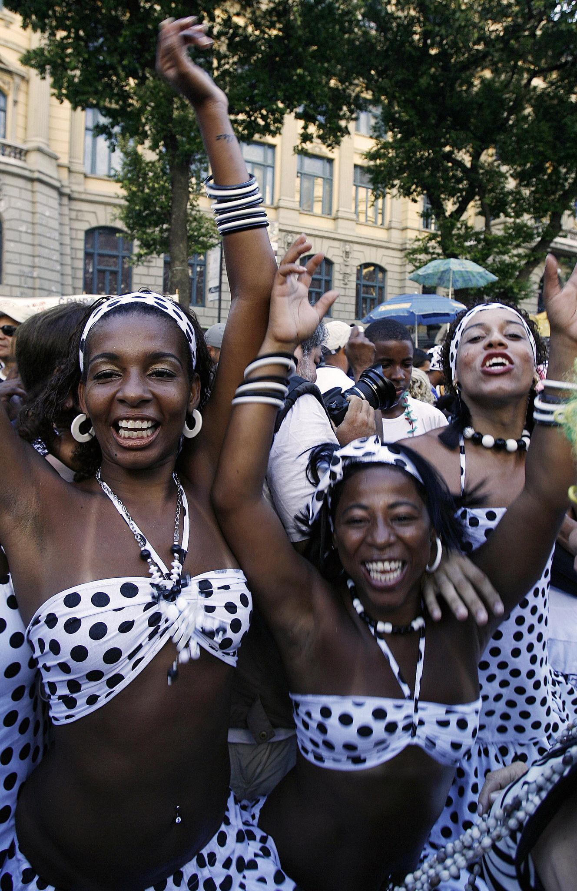
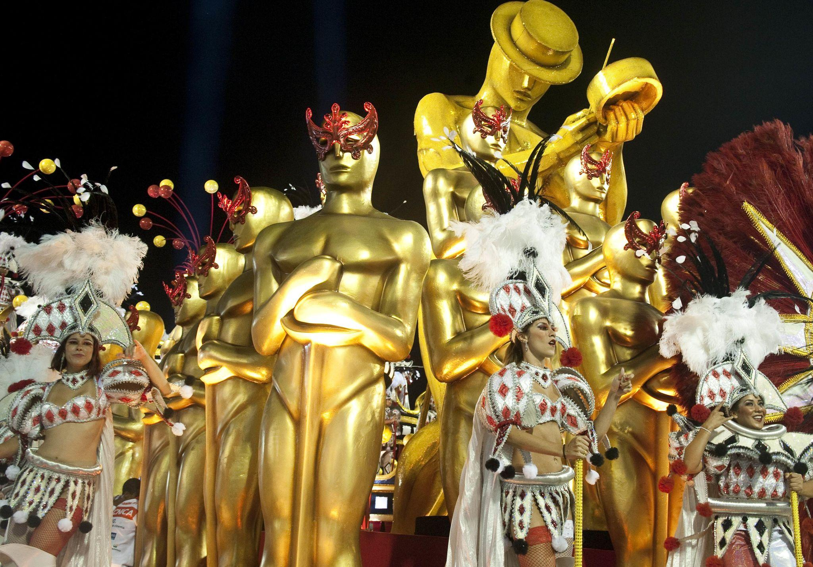

🇧🇷 Rio de Janeiro → rhythm as flow
less rigid central pattern (no strict clave equivalent)
rhythm spreads across:
percussion layers
voice
movement
Feels:
more continuous
less locked
more rolling than snapping
👉 Rio = momentum you ride, not a system you decode
Dancing difference (this matters for your scenes)
Havana
partner-based (son, rumba forms)
close, conversational
pauses + accents matter
Rio
more collective / circular energy
samba emerging in groups, rodas, streets
less about one couple, more about shared pulse
Social structure
Havana
still tied to venues, rooms, nightlife spaces
musicians and dancers in proximity
Rio
spills into:
streets
neighborhoods
early carnival forms
👉 Havana = contained intensity👉 Rio = distributed energy
How it feels as a visitor
In Havana:
“I don’t understand how this fits together yet.”
In Rio:
“I can move with this—even if I don’t understand it.”
The deeper distinction (important for your project)
Havana → music as system
Rio → music as environment
Should you include both?
Absolutely—but don’t duplicate the scene.
Use Havana for:
precision
entry into a code
insider vs outsider tension
Use Rio for:
collective movement
street energy
early samba forming identity
One-line distinction to carry
Havana teaches you where the beat is.Rio makes you forget you were looking for it.
If you want, I can write a Rio scene that contrasts directly with your Havana one—same “outsider entering the room,” but completely different emotional outcome.